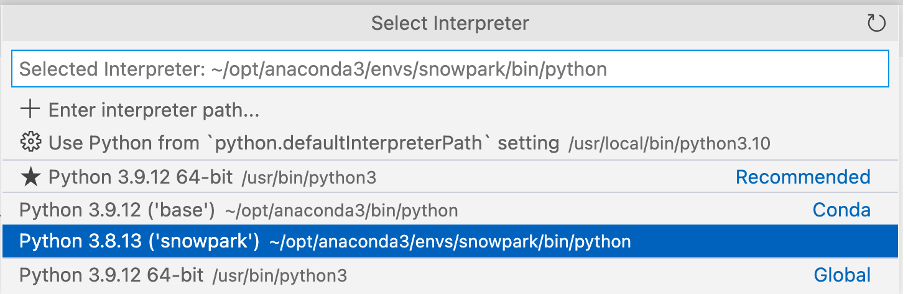

In this hands-on lab, you will build a data application that leverages Economical Data Atlas published by Knoema on the Snowflake Marketplace.
You will process data with Snowpark, develop a simple ML model and create a Python User Defined Function (UDF) in Snowflake, then visualize the data with Streamlit.
conda create --name snowpark -c https://repo.anaconda.com/pkgs/snowflake python=3.8conda activate snowparkconda install -c https://repo.anaconda.com/pkgs/snowflake snowflake-snowpark-python pandas scikit-learnpip install streamlit or conda install streamlitpyarrow related issuespyarrow library already installed, uninstall it before installing Snowpark.pyarrow installed, you do not need to install it yourself; installing Snowpark automatically installs the appropriate version.pyarrow after installing Snowpark.Snowflake's Marketplace provides visibility to a wide variety of datasets from third party data stewards which broaden access to data points used to transform business processes. The Marketplace also removes the need to integrate and model data by providing secure access to data sets fully maintained by the data provider.
Before we begin to review working with Marketplace data sets, verify you have installed a trial version of Snowflake. If not, click Install Snowflake Trial. Now that you have a working trial account, and you are logged into the Snowflake Console, follow the following steps.
What is the US inflation over time?SELECT * FROM "ECONOMY"."BEANIPA" WHERE "Table Name" = 'Price Indexes For Personal Consumption Expenditures By Major Type Of Product' AND "Indicator Name" = 'Personal consumption expenditures (PCE)' AND "Frequency" = 'A' ORDER BY "Date"
Now that we have created a database with the Economy Data Atlas, we need to create a database for our application that will store the User Defined Function.
Select "Worksheets" from the Home menu of Snowflake. Create a new worksheet by selecting the
button.
In the worksheet copy the following script:
-- First create database using the Knoema Economical Data Atlas
-- Go to Marketplace to get database
-- Setup database, need to be logged in as accountadmin role */
--Set role and warehouse (compute)
USE ROLE accountadmin;
USE WAREHOUSE compute_wh;
--Create database and stage for the Snowpark Python UDF
CREATE DATABASE IF NOT EXISTS summit_hol;
CREATE STAGE IF NOT EXISTS udf_stage;
--Test the data
-- What's the size?
SELECT COUNT(*) FROM ECONOMY_DATA_ATLAS.ECONOMY.BEANIPA;
-- What is the US inflation over time?
SELECT * FROM ECONOMY_DATA_ATLAS.ECONOMY.BEANIPA
WHERE "Table Name" = 'Price Indexes For Personal Consumption Expenditures By Major Type Of Product'
AND "Indicator Name" = 'Personal consumption expenditures (PCE)'
AND "Frequency" = 'A'
ORDER BY "Date"
;
-- Now create UDF in VS Code / Notebook
-- Once we created the UDF with the Python Notebook we can test the UDF
SELECT predict_pce_udf(2021);
Now that we have a database that we can use for the Application, we want to explore the data and create a ML model in a User Defined Function (UDF) that can be used by our application.
Open VS code and open the folder with the Python scripts that we created earlier.
You can open the Python notebook (my_snowpark_pce.ipynb) and Streamlit application script (my_snowpark_streamlit_app_pce.py). We will be walking through the sections of the code.
VS Code might ask for the Python environment: \

Make sure you select the ‘snowpark' Conda environment that was created earlier.
You can select the Interpreter by clicking in the lower right corner: \
Let's start by creating a Python script and adding the import statements to include the required libraries.
from snowflake.snowpark.session import Session
from snowflake.snowpark.types import IntegerType, FloatType
from snowflake.snowpark.functions import avg, sum, col, udf, call_udf, call_builtin, year
import streamlit as st
import pandas as pd
from datetime import date
# scikit-learn (install: pip install -U scikit-learn)
from sklearn.linear_model import LinearRegression
In this step, you'll create a Session object to connect to your Snowflake. Here's a quick way of doing that, but note that hard coding credentials directly in code is not recommended in production environments. In production environments a better approach would be to load credentials from AWS Secrets Manager or Azure Key Vault, for example.
We will be using the database that we created in the Snowflake setup section.
# Session
connection_parameters = {
"account": "<account_identifier>",
"user": "<username>",
"password": "<password>",
"warehouse": "compute_wh",
"role": "accountadmin",
"database": "summit_hol",
"schema": "public"
}
session = Session.builder.configs(connection_parameters).create()
# test if we have a connection
session.sql("select current_warehouse() wh, current_database() db, current_schema() schema, current_version() v").show()
In the above code snippet, replace variables enclosed in "<>" with your values.
In this step we will query the data using the traditional method of executing a SQL statement in the Session object, similar to querying data with the Snowflake for Python connector.
# SQL query to explore the data
session.sql("SELECT * FROM ECONOMY_DATA_ATLAS.ECONOMY.BEANIPA WHERE \"Table Name\" = 'Price Indexes For Personal Consumption Expenditures By Major Type Of Product' AND \"Indicator Name\" = 'Personal consumption expenditures (PCE)' AND \"Frequency\" = 'A' ORDER BY \"Date\"").show()
Now we will query the data using a Snowpark DataFrame. As Snowpark uses lazy evaluation, the query and filter conditions are created and the show() method will push this to the Snowflake server where the query will be executed. This reduces the amount of data exchanged between Snowflake and the client/application.
# Now use Snowpark dataframe
snow_df_pce = (session.table("ECONOMY_DATA_ATLAS.ECONOMY.BEANIPA")
.filter(col('Table Name') == 'Price Indexes For Personal Consumption Expenditures By Major Type Of Product')
.filter(col('Indicator Name') == 'Personal consumption expenditures (PCE)')
.filter(col('"Frequency"') == 'A')
.filter(col('"Date"') >= '1972-01-01'))
snow_df_pce.show()
As part of the application we would like to have some predictions of the Personal consumption expenditures price index. So we will create a Pandas dataframe that can be used for training the model with the scikit-learn Linear Regression model. The Snowpark API for Python exposes a method to convert Snowpark DataFrames to Pandas. Again with the Snowpark lazy evaluation we can construct the dataframe query and the to_pandas() function will push the query to Snowflake and return the results as a Pandas dataframe.
# Let Snowflake perform filtering using the Snowpark pushdown and display results in a Pandas dataframe
snow_df_pce = (session.table("ECONOMY_DATA_ATLAS.ECONOMY.BEANIPA")
.filter(col('"Table Name"') == 'Price Indexes For Personal Consumption Expenditures By Major Type Of Product')
.filter(col('"Indicator Name"') == 'Personal consumption expenditures (PCE)')
.filter(col('"Frequency"') == 'A')
.filter(col('"Date"') >= '1972-01-01'))
pd_df_pce_year = snow_df_pce.select(year(col('"Date"')).alias('"Year"'), col('"Value"').alias('PCE') ).to_pandas()
pd_df_pce_year
Now that we have created the features, we can train the model. In this step we will transform the Pandas dataframe with the features to arrays using the NumPy library. Once trained we can display a prediction.
# train model with PCE index
x = pd_df_pce_year["Year"].to_numpy().reshape(-1,1)
y = pd_df_pce_year["PCE"].to_numpy()
model = LinearRegression().fit(x, y)
# test model for 2021
predictYear = 2021
pce_pred = model.predict([[predictYear]])
# print the last 5 years
print (pd_df_pce_year.tail() )
# run the prediction for 2021
print ('Prediction for '+str(predictYear)+': '+ str(round(pce_pred[0],2)))
In this step we will create a Python function that will use the trained model to predict a PCE index based on the function input. We will then use the Snowpark API to create an UDF. The Snowpark library uploads the code (and trained model) for your function to an internal stage. When you call the UDF, the Snowpark library executes your function on the server, where the data is. As a result, the data doesn't need to be transferred to the client in order for the function to process the data.
def predict_pce(predictYear: int) -> float:
return model.predict([[predictYear]])[0].round(2).astype(float)
_ = session.udf.register(predict_pce,
return_type=FloatType(),
input_type=IntegerType(),
packages= ["pandas","scikit-learn"],
is_permanent=True,
name="predict_pce_udf",
replace=True,
stage_location="@udf_stage")
Now we can test the UDF using a SQL command in Python.
session.sql("select predict_pce_udf(2021)").show()
Now that we have a trained ML model and created a UDF to do predictions we can create the Streamlit application.
Similar to the notebook we create a Python script and add import statements to include the required libraries.
# Import required libraries
# Snowpark
from snowflake.snowpark.session import Session
from snowflake.snowpark.types import IntegerType
from snowflake.snowpark.functions import avg, sum, col, call_udf, lit, call_builtin, year
# Pandas
import pandas as pd
#Streamlit
import streamlit as st
We need to set the context for the application page.
#Set page context
st.set_page_config(
page_title="Economical Data Atlas",
page_icon="🧊",
layout="wide",
initial_sidebar_state="expanded",
menu_items={
'Get Help': 'https://developers.snowflake.com',
'About': "This is an *extremely* cool app powered by Snowpark for Python, Streamlit, and Snowflake Marketplace"
}
)
In this step, you'll create a Session object to connect to your Snowflake. Here's a quick way of doing that, but note that hard coding credentials directly in code is not recommended in production environments. In production environments a better approach would be to load credentials from AWS Secrets Manager or Azure Key Vault, for example.
We will be using the database that we created in the Snowflake setup section.
# Create Session object
def create_session_object():
connection_parameters = {
"account": "<account_identifier>",
"user": "<username>",
"password": "<password>",
"warehouse": "compute_wh",
"role": "accountadmin",
"database": "SUMMIT_HOL",
"schema": "PUBLIC"
}
session = Session.builder.configs(connection_parameters).create()
print(session.sql('select current_warehouse(), current_database(), current_schema()').collect())
return session
In the above code snippet, replace variables enclosed in "<>" with your values.
In this step, we'll create a dataframe with US Inflation (Personal consumption expenditures - PCE) data per year. We will be using the BEANIPA table (BEA NIPA: Bureau of Economic Analysis - National Income and Product Accounts data). This table contains around 1.6 million rows, using the Snowpark lazy evaluation this data is processed in Snowflake.
We'll create a dataframe with actual and predicted PCE values based on the UDF with a trained ML model we created in the Notebook section.
And we will combine the actual and predicted dataframes in a new dataframe so we can display the data in a single chart.
Note that when working with Streamlit we need Pandas DataFrames and Snowpark API for Python exposes a method to convert Snowpark DataFrames to Pandas.
We also want to show some key metrics, so we will extract metrics from the dataframes.
As a bonus we want to show the PCE data per quarter for a selected year and the breakdown per major type of product. We will create 2 data frames for this data.
#US Inflation, Personal consumption expenditures (PCE) per year
#Prepare data frame, set query parameters
snow_df_pce = (session.table("ECONOMY_DATA_ATLAS.ECONOMY.BEANIPA")
.filter(col('Table Name') == 'Price Indexes For Personal Consumption Expenditures By Major Type Of Product')
.filter(col('Indicator Name') == 'Personal consumption expenditures (PCE)')
.filter(col('"Frequency"') == 'A')
.filter(col('"Date"') >= '1972-01-01'))
#Select columns, substract 100 from value column to reference baseline
snow_df_pce_year = snow_df_pce.select(year(col('"Date"')).alias('"Year"'), (col('"Value"')-100).alias('PCE')).sort('"Year"', ascending=False)
#convert to pandas dataframe
pd_df_pce_year = snow_df_pce_year.to_pandas()
#round the PCE series
pd_df_pce_year["PCE"] = pd_df_pce_year["PCE"].round(2)
#create metrics
latest_pce_year = pd_df_pce_year.loc[0]["Year"].astype('int')
latest_pce_value = pd_df_pce_year.loc[0]["PCE"]
delta_pce_value = latest_pce_value - pd_df_pce_year.loc[1]["PCE"]
#Use Snowflake UDF for Model Inference
snow_df_predict_years = session.create_dataframe([[int(latest_pce_year+1)], [int(latest_pce_year+2)],[int(latest_pce_year+3)]], schema=["Year"])
pd_df_pce_predictions = snow_df_predict_years.select(col("year"), call_udf("predict_pce_udf", col("year")).as_("pce")).sort(col("year")).to_pandas()
pd_df_pce_predictions.rename(columns={"YEAR": "Year"}, inplace=True)
#round the PCE prediction series
pd_df_pce_predictions["PCE"] = pd_df_pce_predictions["PCE"].round(2).astype(float)-100
#Combine actual and predictions dataframes
pd_df_pce_all = (
pd_df_pce_year.set_index('Year').sort_index().rename(columns={"PCE": "Actual"})
.append(pd_df_pce_predictions.set_index('Year').sort_index().rename(columns={"PCE": "Prediction"}))
)
#Data per quarter
snow_df_pce_q = (session.table("ECONOMY_DATA_ATLAS.ECONOMY.BEANIPA")
.filter(col('Table Name') == 'Price Indexes For Personal Consumption Expenditures By Major Type Of Product')
.filter(col('Indicator Name') == 'Personal consumption expenditures (PCE)')
.filter(col('"Frequency"') == 'Q')
.select(year(col('"Date"')).alias('Year'),
call_builtin("date_part", 'quarter', col('"Date"')).alias('"Quarter"') ,
(col('"Value"')-100).alias('PCE'))
.sort('Year', ascending=False))
# by Major Type Of Product
snow_df_pce_all = (session.table("ECONOMY_DATA_ATLAS.ECONOMY.BEANIPA")
.filter(col('"Table Name"') == 'Price Indexes For Personal Consumption Expenditures By Major Type Of Product')
.filter(col('"Indicator Name"') != 'Personal consumption expenditures (PCE)')
.filter(col('"Frequency"') == 'A')
.filter(col('"Date"') >= '1972-01-01')
.select('"Indicator Name"', year(col('"Date"')).alias('Year'), (col('"Value"')-100).alias('PCE') ))
In this step, you'll add...
# Add header and a subheader
st.title("Knoema: Economical Data Atlas")
st.header("Powered by Snowpark for Python and Snowflake Marketplace | Made with Streamlit")
st.subheader("Personal consumption expenditures (PCE) over the last 25 years, baseline is 2012")
# Add an explanation on the PCE Price Index that can be expanded
with st.expander("What is the Personal Consumption Expenditures Price Index?"):
st.write("""
The prices you pay for goods and services change all the time – moving at different rates and even in different directions. Some prices may drop while others are going up. A price index is a way of looking beyond individual price tags to measure overall inflation (or deflation) for a group of goods and services over time.
The Personal Consumption Expenditures Price Index is a measure of the prices that people living in the United States, or those buying on their behalf, pay for goods and services.The PCE price index is known for capturing inflation (or deflation) across a wide range of consumer expenses and reflecting changes in consumer behavior.
""")
# Use columns to display metrics for global value and predictions
col11, col12, col13 = st.columns(3)
with st.container():
with col11:
st.metric("PCE in " + str(latest_pce_year), round(latest_pce_value), round(delta_pce_value), delta_color=("inverse"))
with col12:
st.metric("Predicted PCE for " + str(int(pd_df_pce_predictions.loc[0]["Year"])), round(pd_df_pce_predictions.loc[0]["PCE"]),
round((pd_df_pce_predictions.loc[0]["PCE"] - latest_pce_value)), delta_color=("inverse"))
with col13:
st.metric("Predicted PCE for " + str(int(pd_df_pce_predictions.loc[1]["Year"])), round(pd_df_pce_predictions.loc[1]["PCE"]),
round((pd_df_pce_predictions.loc[1]["PCE"] - latest_pce_value)), delta_color=("inverse"))
# Barchart with actual and predicted PCE
st.bar_chart(data=pd_df_pce_all.tail(25), width=0, height=0, use_container_width=True)
# Display interactive chart to visualize PCE per quarter and per major type of product.
with st.container():
year_selection = st.selectbox('Select year', pd_df_pce_year['Year'].head(25),index=0 )
pd_df_pce_q = snow_df_pce_q.filter(col('Year') == year_selection).sort(col('"Quarter"')).to_pandas().set_index('Quarter')
with st.expander("Price Indexes For Personal Consumption Expenditures per Quarter"):
st.bar_chart(data=pd_df_pce_q['PCE'], width=0, height=500, use_container_width=True)
pd_df_pce_all = snow_df_pce_all.filter(col('Year') == year_selection).sort(col('"Indicator Name"')).to_pandas().set_index('Indicator Name')
st.write("Price Indexes For Personal Consumption Expenditures By Major Type Of Product")
st.bar_chart(data=pd_df_pce_all['PCE'], width=0, height=500, use_container_width=True)
In the above code snippet, a bar chart is constructed using Streamlit's bar_chart() which takes a dataframe as one of the parameters. In our case, that is a subset (25 years) of the Personal consumption expenditures (PCE) price index dataframe filtered by date via Snowpark DataFrame's _filter() _combined with predicted PCE values leveraging the Snowflake User Defined Functions that contains a trained ML model. Key metrics like the last PCE value and the next 2 predictions including a delta with the last year are displayed using the Streamlit _metric() _function.
More details can be shown by using a year selection (Streamlit_ selectbox() _ function) and a chart with the quarterly values for the selected year and a detailed chart of the PCE values of the major product types for the selected year. Every time a year is selected, the query will be run on Snowflake and the results are displayed by Snowpark and Streamlit.
The fun part! Assuming your Python script is free of syntax and connection errors, you're ready to run the application.
You can run this by executing:streamlit run my_snowpark_streamlit_app_pce.py at the command line, or in the terminal section of VS code. (Replace my_snowpark_streamlit_app_pce.py with the name of your Python script.)
Make sure you have activated the ‘snowpark' Conda environment by using this terminal command: conda activate snowpark
You will see a terminal prompt indicating that you have selected the right Conda environment:
(base) user SummitHOL % conda activate snowpark
(snowpark) user SummitHOL %
In the application: